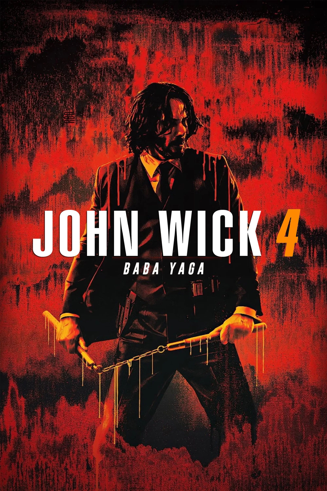

Avatar: Fogo e cinzas
Nesta nova jornada, Jake Sully e Neytiri enfrentam uma tribo de Na'vi muito mais agressiva: o Povo das Cinzas. O filme explora o lado sombrio de Pandora e os desafios de manter a paz em um mundo em constante conflito.
Personagens de Avatar
- Jake sully
- Neytiri
- Kiri
- Lo'ak
- Quaritch(miles Quaritch)

Jhon Wick 4
"John Wick descobre um caminho para derrotar a Alta Cúpula e conquistar sua liberdade definitiva. No entanto, para chegar lá, ele precisa enfrentar um novo e implacável inimigo, o Marquês de Gramont, que possui alianças poderosas em todo o mundo. A jornada leva John de Nova York a Paris, passando por Osaka e Berlim, transformando velhos amigos em adversários em uma luta épica que leva as habilidades do 'Bicho-Papão' ao limite extremo."
Personagens de Jhon Wick4
- Jhon Wick
- Caine
- Marquês de Gramont
- Winston Scott
- Bowery King